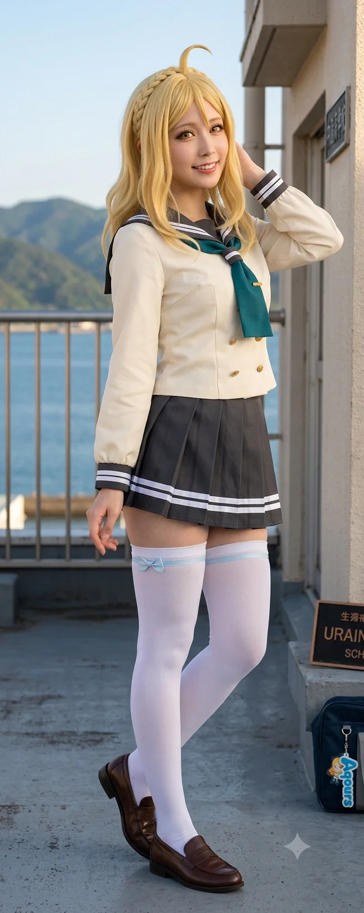

동구대학교 경영학과의 26학번 재학생. 오마리, 하마루, 성공린과 함께 똘똘 뭉쳐 다니는 4인방 중 한 명이자, 동구대 경영학과의 핵심적인 분위기 메이커를 담당하는 초핵심 인싸다.
일본의 유명 스쿨 아이돌 프로젝트에 등장하는 '오하라 마리'와 소름 돋을 정도로 수많은 공통점을 공유하는 현실의 도플갱어 같은 인물이다. 시도 때도 없이 영어를 섞어 쓰는 화법, 특유의 감당 안 되는 하이텐션, 효빈 시내의 5성급 랜드마크 '호텔 하라오'와 탄성군의 매머드급 워터파크 '효빈 샤이니 리조트'를 함께 경영하는 초거대 금수저 집안, 그리고 뛰어난 글래머 체형과 장신이라는 스펙까지 전부 똑같다. 유일한 외형적 차이점이라면 원본 인물이 금발인 반면, 오하리는 찰랑거리는 흑발의 긴 생머리를 가졌다는 점뿐이다.
어머니가 독일인인 혼혈이며, 집안의 대를 이어 훌륭한 글로벌 호텔 체인 최고경영자(CEO)가 되기 위해 동구대학교 경영학과에서 학업에 미친 듯이 매진하고 있다. 평소에는 유쾌하고 장난기 많은 부잣집 아가씨지만, 소중한 친구들이 억울한 일을 당하거나 모욕을 받으면 앞뒤 재지 않고 불도저처럼 달려들어 싸대기를 날려버리는 화끈하고 터프한 성깔의 소유자이기도 하다.
굉장히 밝고 활달하며, 언제나 하이텐션을 유지하는 인간 비타민이다. 감정이 고조되거나 놀랄 때마다 "Oh my god~!", "It's a joke!", "Unbelievable!" 등 유창한 영어를 섞어 쓰며, 특히 기분이 최고조에 달했거나 친구들과 맛있는 것을 먹을 때는 두 손을 반짝이며 "샤이니~!!"라고 외치는 전매특허 리액션을 선보인다.
효빈시 굴지의 대형 호텔 CEO 집안의 영애답게 씀씀이가 크고 부유하지만, 친구들이나 동기들 앞에서는 특권 의식이나 갑질 따위는 눈을 씻고 찾아볼 수 없는 소탈하고 쿨한 성격이다. 오히려 "돈은 이럴 때 쓰라고 있는 거야~!"라며 친구들을 자기 집안 호텔 20층 루프탑 뷔페로 데려가 랍스터를 배 터지게 먹이는 것을 최고의 즐거움으로 여긴다.
그러나 이 명랑한 하이텐션 이면에는 불의를 참지 못하는 활화산 같은 정의감과 성깔이 숨겨져 있다. 평소에는 생글생글 웃으며 장난을 치다가도 친구가 부당한 일을 당하면 눈빛이 섭씨 영하 40도로 차갑게 돌변하며, 말보다 행동(물리적 타격)이 먼저 나가는 터프함을 자랑한다.
눈에 띄게 큰 키와 서구적인 이목구비, 그리고 길고 윤기 나는 흑발 생머리가 트레이드마크다. 혼혈 특유의 이국적이고 화려한 외모 덕분에 가만히 입을 다물고 있으면 범접하기 힘든 차가운 냉미녀 포스를 뿜어낸다.
특히 눈에 띄는 장신임에도 불구하고 신체 비율이 완벽하며, 단신인 하마루와 더불어 동구대 경영학과 26학번 내에서 쌍벽을 이루는 압도적인 글래머 체형을 자랑한다. 서구권(독일) 혼혈 특유의 뚜렷한 이목구비와 우월한 피지컬 덕분에 입학하자마자 캠퍼스 내에서 남학생들의 시선을 한 몸에 받았으나, 본인이 워낙 마이페이스에 철벽이라 섣불리 다가가는 이는 없었다고 한다.
효빈광역시 탄성군 소원면 소원리 출신. 소원면은 비록 행정구역상 '면(面)'이지만, 안천구와 딱 붙어있는 데다 인구가 무려 1.6만 명에 달해 웬만한 소도시나 읍(邑)보다 번화한 곳이다. 특히 효빈 도시철도 4호선 '소원역'이 위치한 교통의 요지이기도 하다. 아버지는 효빈시 시내에서 손꼽히는 5성급 '호텔 하라오'와 소원면 부우리에 위치한 거대 워터파크 시설인 '효빈 샤이니 리조트'를 함께 운영하는 자수성가형 사업가이며, 어머니는 독일인이다.
유복한 가정환경 속에서, 어릴 적부터 5성급 대리석 로비와 매머드급 워터파크를 놀이터 삼아 뛰어다니며 자랐다. 덕분에 그녀는 자연스럽게 가업인 호텔 및 리조트 경영을 100% 완벽하게 승계하고, 나아가 이를 세계적인 글로벌 체인으로 키우겠다는 뚜렷하고 거대한 야망을 품게 되었다.[2]
소원초, 소원중, 그리고 명문 안천여자고등학교를 거치면서 그녀는 단순한 '놀고먹는 금수저'가 되지 않기 위해 피나는 노력을 했다. 안천여고 시절부터 수능 공부와 더불어 경영학, 회계, 재무제표 분석의 기초를 독학으로 마스터했다. 그녀는 5성급의 위엄을 잇는 완벽한 후계자가 되기 위해 동구대학교 경영학과에 수석급의 우수한 성적으로 진학하여, 현재 학업에 미친 듯이 매진하고 있다.
대학에 입학한 뒤, 겉보기엔 성격이 정반대일 것 같지만 묘하게 죽이 잘 맞는 얼음공주 오마리, 구수한 빵순이 하마루, 그리고 성공린을 만나 영혼의 4인방 단짝으로 거듭나게 된다.
재벌급 재력을 지닌 집안의 영애답게, 오하리의 일상 곳곳에는 가업인 최고급 호텔과 대형 리조트의 그림자가 짙게 깔려 있다. 그녀는 친구들을 자신의 구역(?)으로 초대해 자본주의의 맛을 톡톡히 보여주는 것을 가장 큰 즐거움으로 삼는다.
효빈 시내 최중심가 고송동 토모리 해수욕장 앞바다에 위치한 5성급 럭셔리 호텔. 이름인 '하라오(Harao)'는 오하라 마리의 성씨 '오하라(Ohara)'를 거꾸로 뒤집은 기묘한 작명이다. 오하리의 아버지가 운영하는 효빈시의 대표적인 랜드마크 숙박시설로, 으리으리한 로비와 최상층의 화려한 루프탑 뷔페, 외국인 전용 카지노가 널리 알려져 있다.
오하리는 주말이나 친구들의 생일, 혹은 시험이 끝난 날이면 오마리, 하마루, 성공린 등 동구대 4인방이나 어벤져스 멤버들을 이곳으로 불러 마음껏 20층 뷔페 '샤이니 오션'의 랍스터를 쏘는 찐 금수저의 면모를 보여준다. 직원들도 이미 오하리를 '작은 아가씨' 내지 '미래의 부사장님'으로 부르며 깍듯하게 VVIP 대접을 한다.
오하리의 고향인 탄성군 소원면 부우리 42번지 일대에 위치한 매머드급 종합 리조트. 대형 호텔은 물론, 효빈광역시에서 가장 거대한 규모(3만 평)의 야외 워터파크 시설과 프라이빗 풀빌라를 완비하고 있다. 심지어 오하라 마리의 원작 재벌 설정에 완벽하게 걸맞게 전용 헬기장(Helipad)까지 완벽하게 갖추고 있는 자본주의의 결정체다.
여름방학 시즌이 되면 오하리가 경영학과 친구들과 아쿠아 어벤져스 멤버들(고해영, 석다연, 도선요 등)을 몽땅 초대해 가장 비싼 독채 풀빌라를 3동씩 사비로 대관하여 수영장을 전세 낸 듯 프라이빗 풀파티를 연다. 리조트 이름에 오하리 본인의 전매특허 말버릇인 '샤이니(Shiny)'가 대놓고 들어가 있어, 사실상 오하리 본인을 위해 지어진 곳 아니냐는 우스갯소리가 돌 정도다. 썰렁하기 짝이 없는 바로 앞 운전면허시험장과 극도의 대비를 이루며 부우리의 분위기를 단번에 하와이급 휴양지로 바꿔놓는 곳이다.
오하리의 본가인 탄성군 소원면 소원리(소원역 앞)에 위치한 관광 호텔. 이름부터 '마리호텔'인 이곳은 오하리의 친척이 운영하고 있으며, 오하라 마리 성지순례를 위해 소원역을 찾는 러브라이버들의 전폭적인 지지를 받으며 베이스캠프로 활용되고 있다. 대형 5성급 호텔 하라오만큼의 규모는 아니지만 친척이 운영하는 곳이다 보니, 오하리도 가끔 고향에 내려가 이곳에 들러 성지순례객들에게 유쾌하게 "샤이니~!" 인사를 건네며 호텔 홍보를 자처한다.
5성급 호텔 영애의 우아함을 단숨에 산산조각 내버리는, 오하리와 주변 어벤져스 인물들의 영화보다 더 미친 기행 14가지를 낱낱이 파헤쳐보자. 1개 일화당 스케일과 디테일이 블록버스터급이다.
오마리가 악질적인 에타 루머(스폰서 의혹)로 극도의 스트레스를 받아 응급실에 실려 가 결석했던 다음 날, 전공 필수 수업 시간. 평소라면 강의실에 들어오자마자 "샤이니~!"를 외치며 활보했을 오하리였지만, 이날만큼은 절친이 억울하게 쓰러졌다는 충격과 극도의 스트레스 때문에 평소의 하이텐션이 완벽하게 증발한 채, 무겁고 조용한 분위기 속에서 고개만 푹 숙이고 있었다. 그 모습은 마치 어딘가의 판타지 평행세계에 등장하는 은둔형 '마왕' 마리처럼 한없이 쓸쓸하고 기운 없는 모습이었다.
그때, 김재욱과 그 쓰레기 복학생 패거리들이 강의실에 나타나 "핏덩이한테 다리 벌리다 뽀록나서 쓰러졌냐"며 마리를 향해 패륜적인 모욕을 쏟아냈다. 멍하게 앉아있던 오하리의 눈빛이 서서히 식어가는 가운데, 옆에 있던 하마루가 극대노하여 소리치자, 이번엔 김재욱이 하마루를 역겹게 위아래로 훑어보며 "빵만 쳐먹고 다녀서 몰랐는데 몸매 좀 치네? 나랑 모텔 가서 한 번 할래?"라는 선 넘는 구역질 나는 성희롱을 내뱉었다.
그 순간, 기운 없이 가라앉아 있던 오하리의 내면에서 폭염 같은 활화산이 터져버렸다. "...오 마이 갓. 왓 더... 저 짐승만도 못한 개쓰레기 새끼가 감히 내 소중한 친구한테...!!" 조용히 웅크리고 있던 오하리는 용수철처럼 자리를 박차고 튀어 나가, 허리의 회전과 163cm 장신의 체중을 100% 실은 오른손으로 김재욱의 안면을 향해 풀스윙 싸대기를 날렸다.
짜아아아아악——!!!!!
강의실 전체가 쩌렁쩌렁 울릴 만큼 거대한 파열음이 터졌고, 190cm에 육박하는 건장한 복학생 김재욱의 고개가 물리법칙을 무시한 듯 그대로 180도 돌아가며 안경이 허공을 날았다. 김재욱이 뺨을 부여잡고 비틀거리며 나뒹굴자, 오하리는 분노로 온몸을 부들부들 떨며 영어와 한국어를 섞어 사자후를 토해냈다. "셧 더 마우스!! 이 개쓰레기 같은 새끼가 어디서 더러운 주둥아리를 함부로 놀려?! 당장 하마루랑 마리한테 무릎 꿇고 대가리 박고 사과 안 해?!" 이 엄청난 물리적 타격은 훗날 동구대 경영학과 에타에서 '전설의 샤이니 싸다구'로 영원히 박제되었다.
오하리의 통쾌하고 완벽한 물리 치료 참교육 직후, 강의실에 들어온 전공필수 교수 경철래는 상황을 전혀 객관적으로 보지 않았다. 김재욱 패거리 여학생들이 재빠르게 악어의 눈물을 짜내며 "저 신입생 년이 갑자기 선배를 때렸어요!"라며 거짓 선동을 늘어놓자, 경철래는 앞뒤 사정도 묻지 않고 하마루와 오하리를 향해 "어디 감히 신성한 지성의 전당인 내 강의실에서 선배 뺨을 쳐?!"라며 꼰대스러운 역정을 냈다.
기가 막힌 오하리가 핏대를 세우며 "교수님! 저 쓰레기들이 먼저 하마루한테 끔찍한 성희롱과 패드립을 했습니다! 디스 이즈 크라임(Crime), 범죄라고요!! 와이 캔츄 언더스탠드!!"라며 피를 토하듯 억울함을 호소했다. 하지만 권위주의에 찌든 경철래는 오히려 "어디 교수가 말하는데 꼬박꼬박 말대꾸야! 너희 둘, 이번 학기 내 과목 성적은 예외 없이 전부 F다. 성적을 구제받고 싶다면 오늘 당장 내 연구실로 와서 무릎 꿇고 바닥 청소나 해라!"라며 구역질 나는 적반하장의 권력형 갑질을 시전했다. 결국 무소불위의 학점 권력 앞에 속수무책으로 강의실에서 쫓겨난 오하리는, 친구들과 함께 가방을 싸 들고 복도로 나와 뜨거운 분노와 서러움의 눈물을 뚝뚝 흘려야만 했다.
경영관 복도로 쫓겨나와 넋을 놓고 울고 있던 중, 기적처럼 교내 시찰을 돌던 동구대 최고 존엄 김성송 총장과 로비 입구에서 딱 마주쳤다. 오하리는 눈물을 거칠게 닦아내며 하마루, 성공린과 함께 총장의 앞을 가로막고, 김재욱 일당의 패륜적인 성적 모욕과 경철래 교수의 어처구니없는 F학점 협박 갑질 사태를 피를 토하듯 낱낱이 고발했다.
이들의 처절하고도 논리적인 증언을 끝까지 경청한 김성송 총장은 분노하며, "우리 동구대에 그런 쓰레기 같은 적폐가 아직도 남아있단 말인가! 학칙이 허용하는 한도 내에서 가장 파멸적이고 즉각적인 상응 징계를 집행하겠다"며 든든한 방패막이가 되어주었다. 그제야 거대한 산 같은 안도감에 다리가 풀려 바닥에 털썩 주저앉은 오하리는 아이처럼 펑펑 울었다.
이후 이어진 회계원리 수업에서 반격이 시작되었다. 참된 교육자인 회계 교수가 김재욱 일당의 알량한 거짓말에 속지 않고 오히려 그들을 "너희 같은 쓰레기들은 내 수업을 들을 자격조차 없다. 어차피 F 맞을 실력이니 꼴도 보기 싫다, 당장 나가라!"라며 교실 밖으로 내쫓아버렸다. 이 통쾌한 역전극을 맨 앞자리에서 직관하던 오하리는 두 손을 깍지 낀 채 하늘을 향해 "오 갓... 지저스... 엑설런트...!! 인과응보 퍼펙트!!"를 연발하며 완벽한 사이다 카타르시스를 만끽했다.
이후 사태는 일사천리로 진행되었다. 지선진 국회의원과 박효빈 효빈시장의 막강한 공권력 합작으로, 김재욱 일당은 시청 광장 한복판에서 수갑이 채워져 호송 버스에 오줌을 지리며 연행되는 굴욕을 맛보았다. 게다가 석다연의 무자비한 법적 서포트로 수십억 대의 징벌적 민사 소송 고소장까지 맞았다는 뉴스를 접한 오하리.
그녀는 동구대 기숙사에서 친구들과 라지 사이즈 배달 피자를 3판이나 시켜 먹으며 콜라 캔을 치켜들고 천장이 떠나가라 환호성을 질렀다. "예에에에스!! 언빌리버블 퍼펙트 샤이니!!! 저 쓰레기들 빵스(감방)에 들어가서 평생 썩게 생겼다!! 이게 바로 정의구현이지 큥!!"
모든 사태가 종결되고 마리가 건강을 회복해 무사히 학교로 돌아온 날. 자책하며 고개를 푹 숙이고 미안해하는 마리를 향해, 오하리는 달려가 그녀를 부서져라 꽉 껴안았다. "오, 맘마미아! 마리 넌 잘못한 거 낫 띵이야! 네가 없어서 내 텐션이 얼마나 바닥을 쳤고 내 심장이 얼마나 아팠는지 알아?! 다신 아프지 마 바보야!!"라며 특유의 구김살 없고 눈물 섞인 하이텐션으로 마리의 굳게 닫혀있던 마음을 완벽하게 녹이고 치유해 주었다.
오하리가 고등학생이던 시절, 타 지역에서 효빈으로 놀러 온 소중한 중학교 단짝 친구들을 자신의 호텔로 부르려 효빈역에서 택시를 잡아주었다. 그런데 귀가 어둡고 고급 호텔 이름이 생소했던 택시 기사님이 "아하, 파라오(Pharaoh) 모텔! 거 으슥한 데 이집트 스핑크스 벽화 그려져 있는 데지? 알지 알지!"라며 아이들을 북구 외곽의 무섭고 낡은 모텔촌 한가운데로 던져놓고 가는 대참사가 발생했다.
길을 잃고 덩치 큰 아저씨들에 둘러싸여 무서움에 떨던 친구들이 울면서 전화를 걸어오자, 전말을 파악하고 극대노한 오하리는 다음 날 아침 교복을 입은 채 할아버지(창업주)의 마호가니 원목 책상이 있는 회장 집무실로 문을 박차고 쳐들어갔다. "할부지!! 내 친구들이 어제 이집트 미라 될 뻔했잖아!! 택시 기사들이 우리 5성급 호텔을 똥통 모텔이랑 헷갈린다고!! 당장 오늘 당장!! 호텔 옥상에 H.A.R.A.O 글씨 대문짝만하게 안 박아 놓으면 나 할부지 책상 발로 차고 가출해서 안 들어올 거야 캉캉!!"이라며 바닥에 드러누워 발버둥을 치며 뗑깡을 부렸다.
눈에 넣어도 안 아픈 손녀 바보였던 할아버지는 껄껄 웃으며 그 즉시 긴급 이사회를 소집했다. 할아버지는 수억 원의 현찰과 30톤짜리 초대형 헬기 크레인을 동원하여, 한 달 만에 호텔 20층 옥상 정중앙에 밤바다를 10km 밖에서도 환하게 비추는 영롱한 보라색 'HARAO' 초거대 LED 네온사인 간판을 보란 듯이 세워버렸다. 덕분에 요즘은 효빈 앞바다로 새벽 조업을 나가는 오징어잡이 어선들이, 항구의 등대 불빛 대신 하라오 간판의 보라색 불빛을 보고 무사히 길을 찾아 돌아온다는 전설적인 실화가 생겼다.
동구대 경영학과 1학기 지옥의 회계원리 중간고사가 무사히 끝난 날, 오하리가 "오늘 밤새워 고생한 불쌍한 서민 중생들에게 이 영애님이 하라오 최고급 뷔페를 하사하마 큥!"이라며 단짝 3인방과 당가동 어벤져스 멤버들을 20층 '샤이니 오션' 뷔페로 몽땅 소집했다. 1인당 15만 원짜리 최고급 시푸드 뷔페를 지갑도 안 꺼내고 영수증에 자기 사인 하나 쓱 휘갈기며 프리패스로 통과시키는 진짜 금수저의 플렉스를 보여주어 친구들의 열렬한 환호를 받았다.
하지만 문제는 식욕의 통제력을 완전히 상실한 피지컬 근육 괴물 송과영이었다. 뷔페에 입장하기 전 피트니스에서 100kg 바벨 스쿼트 500개를 조지고 와서 극도로 허기가 진 과영은 "오, 오늘 하체 운동 조졌는데 단백질 보충 좀 빡세게 해볼까"라며 집게를 들었다. 그녀는 무려 얼굴만 한 2kg짜리 바닷가재(랍스터) 버터구이 20마리, 광어와 연어 초밥 80피스, 참기름을 두른 전복 구이 3접시를 혼자서 거대한 접시에 탑처럼 쌓아와 진공청소기처럼 껍질째 씹어 빨아들였다.
단 30분 만에 뷔페 해산물 메인 코너가 메뚜기 떼가 지나간 듯 완벽하게 거덜 나버렸다. 뒤늦게 해산물을 가지러 온 다른 외국인 투숙객들이 텅 빈 얼음 매대를 보고 황당해하며 "Where is my lobster?!"라고 항의하자, F&B 지배인이 사색이 되어 뛰어다니다 오하리에게 다가와 귓속말을 했다. "아가씨... 저 친구 분 때문에 스시 쥐던 셰프님이 손에 쥐가 나서 쓰러지셨습니다..." 오하리는 이마를 짚으며 "미... 미친 돌고래 근육녀야... 네가 씨푸드 뷔페를 멸망시킬 일 있어 큥?! 그만 좀 쳐먹어!!"라며 과영의 떡 벌어진 등짝을 찰싹 후려쳤다. 결국 지배인은 인근 어간수산시장에 야간 긴급 퀵 발주를 넣어 랍스터를 급하게 추가로 쪄내야만 했던 뷔페 파산(?) 직전의 위기였다.
중2병 말기 환자 진선자가 드디어 스무 살 합법적 성인이 된 기념으로, 3층 외국인 전용 '하라오 카지노'에 기어코 들어가 '도박 묵시록 카이지'의 주인공처럼 일확천금을 땡기겠다며 억지를 부린 사건이다.
진선자는 한여름에 더워 죽겠는데도 두꺼운 검은 깃털 망토를 칭칭 두르고, 카지노 입구를 지키는 2m짜리 덩치 큰 러시아계 외국인 보안 요원 앞을 당당하게 막아섰다. 그녀는 여권 대신 본인이 직접 노트에 크레파스로 그린 '리틀 데몬 타천사 1급 신분증(종이 쪼가리)'을 내밀며 "길을 비켜라, 미천한 닝겐! 나는 국경을 초월한 지옥의 영혼이다! 다크니스의 힘으로 잭팟을 터뜨릴 테니 당장 룰렛 테이블로 나를 안내하라!"라고 무려 3줄짜리 흑마법 영창을 외우며 미친 어그로를 끌었다.
보안 요원이 어이없어하며 무전을 쳐서 경찰을 부르려는 찰나, 마침 로비에서 커피를 마시다 이를 목격한 이리자가 딥빡의 한숨을 쉬며 성큼성큼 다가왔다. 이리자는 보안 요원에게 고개를 깊숙이 숙이며 "Sorry, she is a severe mental patient escaped from our hospital (정말 죄송합니다, 우리 병원 탈출한 중증 정신병 환자입니다)."라고 유창하고 차분한 영어로 사과했다.
그 직후, 뒤돌아서서 헛소리를 계속하는 진선자의 목덜미 미주신경(기절 급소)에 무자비한 '쾌감펀치' 수도 촙을 정확히 날려 단 1초 만에 "기랑...!" 소리와 함께 바닥에 기절시켰다. 이리자는 바닥에 널브러진 진선자의 망토 자락을 쥐고 짐짝처럼 질질 끌며 엘리베이터에 탔고, 보안 요원은 그 완벽한 외과적 제압술에 경의의 기립 박수를 보냈다.
무더운 8월 한여름 피서철, 오하리의 초대로 호텔 바로 앞 토모리해수욕장에서 수영복을 입고 물놀이를 하던 빵순이 하마루. 그녀는 토모리 해변 관광과의 명물인 '거대 펭귄 인형 튜브'에 혼자 쏙 올라타, 튜브 위에서 호텔 베이커리(샤론)에서 훔쳐 온 한정판 메론빵을 우적우적 뜯어먹으며 따뜻한 햇살에 스르륵 낮잠을 자고 있었다.
그러나 하필 그때 서해안의 강한 썰물(조류)이 발생했고, 튜브는 하마루를 태운 채 방파제 저 멀리 해경 통제 구역을 넘어 시커먼 먼바다로 둥둥 떠내려가는 대형 해난 사고를 쳤다. 잠에서 깬 하마루가 주변에 아무도 없는 시퍼런 바다를 보고 패닉에 빠져 "살려줘유 즈라아아!! 나 수영 못해유!!"라며 파리만 한 점으로 멀어지자, 해변에 있던 일행들은 사색이 되어 발칵 뒤집혔다.
이때 해변 파라솔 아래서 치킨을 뜯고 있던 해군 제복 오타쿠 도선요와 스쿠버 다이버 1급 자격증 보유자 송과영이 치킨 무를 뱉고 벌떡 일어났다. 선요는 본인이 해군 함장이라도 된 듯 선원 모자를 고쳐 쓰며 "해양 구조대 전속 전진 요소로!!"를 외치고, 백사장에 정박해 있던 렌탈용 바나나보트 견인 모터보트에 뛰어올라 미친 코너링으로 시동을 걸고 맹렬히 파도를 가르며 돌진했다.
과영은 보트 뱃머리에 늠름하게 서서 물안경을 끼고, 작살(?) 대신 굵은 인명 구조용 튜브 밧줄을 쥐고 투척을 준비했다. 심지어 과영은 보트가 다가가기도 전에 먼저 바다로 다이빙해 모터보트보다 빠른 속도로 헤엄쳐 가는 미친 잠수력을 보여주었다. 이들은 마치 UDT 특수부대 해상 구출 작전처럼 단 5분 만에 먼바다에 도달해, 펭귄 튜브 목을 껴안고 바닷물을 먹어 울고 있는 하마루의 구명조끼 뒷덜미를 짐짝처럼 낚아채어 무사히 호텔 로비로 복귀하는 헐리우드급 액션을 선보였다. 하마루는 로비 바닥에 엎드려 "다시는 바다에서 빵 안 먹을게유 즈라 ㅠㅠ"라며 오열했다.
지하 1층 비밀의 굿즈 매점에 일본에서도 구하기 힘든 초한정판 '오하라 마리 1/4 스케일 바니걸 피규어(전국 10개 한정 입고)'가 입고된 운명의 날. 새벽 5시부터 호텔 복도에 텐트를 치고 밤을 새우며 얌전히 기다리던 선량한 찐팬들 사이로, 불법으로 고용한 알바생 노숙자들을 이끌고 캠핑용 접이식 의자와 쓰레기를 바리바리 싸 들고 온 전문 굿즈 리셀러(되팔이) 일당 5명이 나타났다. 그들은 덩치를 앞세워 무력으로 새치기를 하며 진열대의 물건을 박스째로 싹쓸이 카트에 담으려 들었다. 매점 직원이 막아서며 쩔쩔매고, 뒤에 서 있던 덕후들이 분노하여 멱살을 잡기 일보 직전인 폭동 상황이었다.
이때, 호텔 조식을 먹고 소화 겸 에스컬레이터를 타고 내려온 로스쿨생이자 어벤져스 법적 처형인 석다연이 5성급 호텔 가운을 걸친 채 아이스 아메리카노 컵을 들고 유유히 나타났다. 그녀는 리셀러 우두머리의 앞을 딱 가로막고, 서늘한 눈빛으로 입가의 점을 씰룩이며 말했다.
"아저씨들. 지금 다수결의 위력을 과시하며 정당한 대기열을 무시한 행위는 형법 제314조 업무방해죄 및 제319조 건조물침입죄에 해당하며, 시세 차익이라는 부당이득을 목적으로 한 조직적 매점매석 사재기 행위는 '특정경제범죄 가중처벌 등에 관한 법률'을 들먹이지 않더라도 현행범 체포 요건을 아주 교과서적으로 완벽히 충족하네요. 이 호텔 옥상 펜트하우스에 지금 오하리 이사님 전담 대형 로펌 법무팀이 아침 회의 중인데 다이렉트로 콜 때려 드릴까요? 10초 안에 그 카트 박스 고스란히 내려놓고 가져온 쓰레기 다 치워서 쥐새끼처럼 비상구로 도망갈래요, 아니면 영업방해 손해배상 청구액 5천만 원 민사소송장 맞고 뿟뿌 데스와(법의 심판) 당할래요?"
다연의 살벌한 안광과 숨 막히는 법 조항 속사포 논리 폭격에 영혼까지 털려버린 리셀러들은, 들고 있던 피규어 박스를 바닥에 내팽개치고 오줌을 지릴 뻔하며 비상계단으로 우르르 도망쳤다. 밤새 기다리던 오타쿠들은 다연을 진정한 구원의 여신으로 추앙하며 홍해처럼 길을 터주었고, 다연은 유유히 피규어 1개를 정가로 카드 결제하고 방으로 올라갔다.
오하리가 갓 초등학교에 입학했던 1990년대 후반 늦여름, 효빈 북구 해안가를 완벽하게 박살 낸 '매미'급 초강력 태풍이 토모리 해수욕장을 정면으로 덮쳤다. 집채만 한 파도가 해안 도로를 넘어오고 전신주가 쓰러져 지하철이 끊기면서, 피서를 왔던 관광객 수백 명과 저지대 동네 주민들이 오도 가도 못하고 고립되는 절체절명의 국가적 위기 상황이 발생했다.
당시 호텔의 총수였던 할아버지(창업주)는 즉각 비상 대책 회의를 소집하더니, 이탈리아산 최고급 대리석이 망가지고 카펫이 젖는다며 결사 반대하며 만류하는 임원들을 향해 지팡이를 '쾅!' 내리치며 호통을 쳤다.
"돈은 나중에 다시 벌면 된다! 사람이 물에 빠져 죽게 생겼는데 대리석 쪼가리가 문제냐! 지금 당장 1층 로비와 4, 5층 그랜드 컨퍼런스 홀 카펫 다 걷어내고 따뜻한 모포 1,000장 깔아라! 정문 다 열어제껴! 그리고 총주방장 당장 불러서 주방 냉동고에 있는 뷔페용 최고급 식자재 아끼지 말고 다 털어서 이재민들 덜덜 떨지 않게 따뜻하게 먹여라!"라는 재난 영화에서나 나올 법한 미친 대인배적 결단을 내렸다.
그날 밤, 물에 빠진 생쥐 꼴로 고립되었던 수백 명의 피서객들은 5성급 호텔의 눈부신 스와로브스키 크리스탈 샹들리에 아래 따뜻한 모포를 덮고 누워, 호텔 수석 셰프가 철판에서 직접 버터로 구워주는 랍스터 구이와 1++ 한우 전복 스테이크를 평생 잊지 못할 무료 배급(?) 식사로 받아먹으며 폭풍 감동의 눈물을 펑펑 흘렸다. 이 압도적인 자선 조치 덕분에 하라오 호텔은 효빈 시민들에게 '영원히 절대 까면 안 되는 착한 갓(God) 향토 기업'으로 뇌리에 완벽하게 각인되었고, 이후 어떠한 대기업 프랜차이즈의 공세에도 흔들리지 않는 굳건한 5성급 독자 랜드마크로 자리 잡게 되었다.
어벤져스 멤버들 전원이 최상층 '오하라 마리 테마 스위트룸'에 모여 밤샘 파자마 파티와 블루레이 상영회를 하던 날. 새벽 2시, 수다를 떨다 배가 고파진 멤버들을 위해 오하리가 4만 5천 원짜리 룸서비스 '샤이니 미드나잇 세트(수제 뚱카롱 6구+포트넘 앤 메이슨 최고급 홍차)'를 내선 전화로 시켰다.
그런데 달달한 단당류에 중독된 오하리와, 아무리 먹어도 먹어도 배가 안 차는 대식가 송과영의 폭주가 시작되었다. 세트가 도착한 지 5분 만에 싹 비워버린 그들은, "하나 더! 아니 두 개 더 줘!"를 외치며 무려 세트를 10번이나 연속으로 룸서비스 인터폰을 갈겨 재주문하는 미친 진상 짓을 벌였다. 5성급 호텔 룸서비스 역사상 유례없는 야간 디저트 폭격이었다.
결국 새벽 4시경, 다크서클이 턱까지 내려와 지칠 대로 지친 룸서비스 직원이 은쟁반 카트를 끌고 10번째 스위트룸 문을 열고 들어와 털썩 무릎을 꿇고 애원했다. "아가씨... 제발 그만 시켜주세요... 지금 지하 1층 주방 파티시에 수석 셰프님이 퇴근도 못 하고 울면서 마카롱 꼬끄 반죽을 치대다가 과로로 쌍코피가 뚝뚝 떨어지셨습니다 ㅠㅠ 프랑스산 고급 버터도 재고가 다 떨어졌어요..."
그 참혹한 몰골의 직원을 본 오하리는 그제야 사태의 심각성을 파악하고 "오 마이 갓! 아임 쏘 쏘리!! 셰프님 코피 나게 해서 내가 미안해 큥!! 당장 주문 스톱하고, 셰프님이랑 직원분 계좌 번호 불러! 특별 보너스 100만 원씩 지금 당장 사비 폰뱅킹으로 넣어드릴게 큥!!"이라며 쿨하게 사과하고 야간 주방 털이를 멈추었다. 실제로 100만 원 보너스가 새벽에 즉시 입금되자 직원들은 만세를 불렀고, 이 사건은 아직도 호텔 F&B 직원들 사이에서 악명 높지만 달달한 '스위트룸 10연속 뚱카롱 싹쓸이 폭파 사건'으로 회자되며, 오하리가 묵는 날엔 주방에서 미리 셰프들이 몬스터 에너지를 마시고 버터를 산더미처럼 준비해 놓는다고 한다.
오하리가 대학 경영학과에 진학하고 가문 소유의 '샤이니 리조트' 경영에 본격적으로 실무 참견(?)하기 시작했을 무렵. 그녀는 친구들과 워터파크 푸드코트를 암행 순찰하며 밥을 먹던 중, 창렬한 소시지와 떡볶이의 맛과 극악무도한 18,000원짜리 가격표를 동시에 보고 뚜껑이 완벽하게 열려버렸다.
오하리는 F&B 총괄 지배인을 즉각 자신의 테이블로 호출하여 그 자리에서 대갈일성을 쏟아냈다. "오 마이 갓! 왓 더... 이 싸구려 냉동 밀떡볶이가 만이천 원?! 장난해 큥?! 아빠!! 이런 비양심적이고 질 떨어지는 바가지 장사는 우리 5성급 리조트 이름에 똥칠을 하는, 전혀 낫 샤이니(Not Shiny)한 짓이잖아!! 당장 입점 업체들 임대료 마진율 싹 다 까고, 메뉴 가격 반토막 내고 퀄리티는 백화점 급으로 올려!! 내가 동구대 친구들 호기롭게 데려왔다가 창피해서 얼굴을 들 수가 없어서 죽을 뻔했어 캉캉!!"
이 폭풍 같은 잔소리와 자본주의적 철퇴가 내려진 이후, 리조트 내 모든 식음료 매장의 물가는 바깥 일반 시내 식당(안천지구 상권) 가격과 비교해도 고작 500원 내외 차이밖에 나지 않는, 완벽하게 정상화된 혜자로운 정찰제로 싹 갈아엎어졌다. 이 '착한 물가' 선언 덕분에 샤이니 리조트는 전국구 맘카페에 입소문을 타며 매표소 줄이 매일 매진을 기록하는 폭발적인 박리다매 흑자를 내고 있다. 그녀가 왜 차기 CEO 재목인지 증명한 사건이다.
하라오 호텔 3층 외국인 전용 카지노 VVIP 프라이빗 룸에서 발생한 일화다. 거액의 돈을 잃은 중국계 블랙컨슈머 도박꾼이 딜러의 멱살을 잡고 "카드가 조작된 거 아니냐! 내 돈 다 내놔라 해!"라며 억지를 부리며 재떨이를 던지고 난동을 부렸다. 건장한 보안 요원들이 출동했으나, VVIP 고객이라 함부로 제압하지 못하고 쩔쩔매고 있었다.
이때 경영학과 재무 수업을 마치고 호텔로 돌아온 오하리가 이 난장판을 목격했다. 그녀는 딥빡의 한숨을 쉬더니, 딜러를 밀어내고 본인이 직접 카지노 테이블의 딜러 석에 앉았다. "오케이. 당신이 그렇게 카드 게임에 자신 있으면 나랑 딱 세 판만 해. 내가 지면 당신이 잃은 돈 두 배로 사비로 물어줄게. 하지만 내가 이기면 당장 우리 직원한테 도게자(사과)하고 블랙리스트 올라가서 짐 싸서 쫓겨나는 거야. 딜?"
도박꾼은 코웃음을 치며 승낙했지만, 오하리는 경영학과에서 배운 소름 돋는 통계학적 확률 계산과 상대의 심리를 꿰뚫는 포커페이스(블러핑)를 완벽하게 구사해, 단 세 판 만에 도박꾼의 남은 판돈 수억 원을 완벽하게 싹싹 털어버리는 '타짜' 강림 모드를 보여주었다. 영혼까지 털린 도박꾼은 울면서 딜러에게 사과하고 캐리어를 끌고 쫓겨났고, 이 사건 이후 카지노 직원들은 오하리를 '전설의 타짜 아가씨'로 모시게 되었다.
